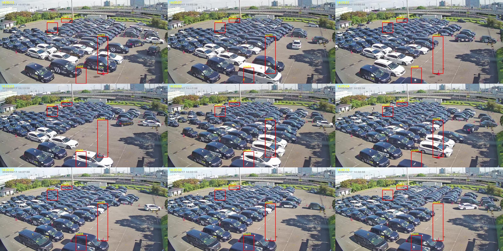
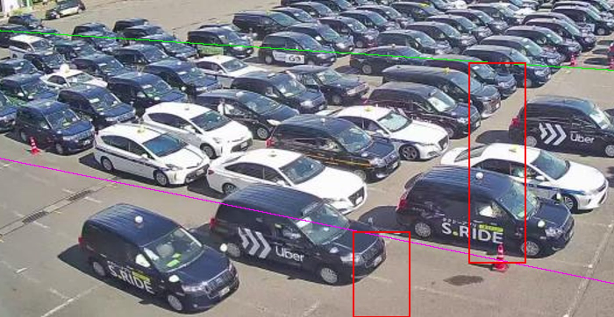

1〜3号の列移動は測れているか（2026-09-18）
結論：4号と同じ弱点を持ったまま。「帯の途中に置いた小箱」で数えているので、列1（出口側の端）を見ていない。
① 今の測り方（手前カメラ real001）

14:00〜14:40、5分おき。赤枠＝今の計測箱（stall1・stall2・stall3・stall4手前）。
- 3号の箱（縦長）は塊の右端＝入口側にある。出口は左端（記録どおり）。14:10〜14:15 は塊があるのに箱は空＝この間の動きは数えられない。
- 1号・2号の箱（小さい・遠い）は帯の左寄りにある。出口は右端。塊が箱まで伸びている時しか反応しない。
- 箱を車が通り抜ける時の「出る→入る」を1回と数えるので、2列まとめて進んでも1回になる（4号で見つけたのと同じ）。
② 3号の帯を拡大

緑＝2号/3号の境、紫＝3号/4号の境（設定）。3号の車は左下を向いて止まり、列1は帯の左端の縦一列。塊は左へ進む。赤枠（右寄り）は列1ではなく、塊の後ろ側。
③ 記録の数字で見ても
| 号 | 今の記録（9/9〜9/17） | 8/27監査（旧カメラ期の実測） |
|---|---|---|
| 1号 | 5〜14回/日 | 37回/日 |
| 2号 | 6〜16回/日 | 46回/日 |
| 3号 | 18〜40回/日 | 51回/日 |
| 4号（直した後） | 23〜31回/日 | 63回/日 |
※旧カメラ期の数字は測り方が違うので同じ物差しではないが、1号・2号の少なさは目立つ。
④ 直すには
4号と同じ作り（列1の端の位置を追い、出た→進んだ を列数つきで数える）を、1〜3号の帯それぞれに作る。ただし手前カメラは斜めから見ているので、帯の端（出口側）に柵・コーン・隣の帯が重なり、4号より手間がかかる（試しに端を追う線を引いたが、端の固定物に引っかかって今は使えない）。1日分の研究＋目視20件を、4号と同じ手順でやる。
A（おすすめ）：1〜3号も同じ手順で研究→目視→実装（まず3号、次に2号・1号の順。1号は遠く小さいので精度が落ちる見込み）。
B：3号だけ先にやる。
C：据置。